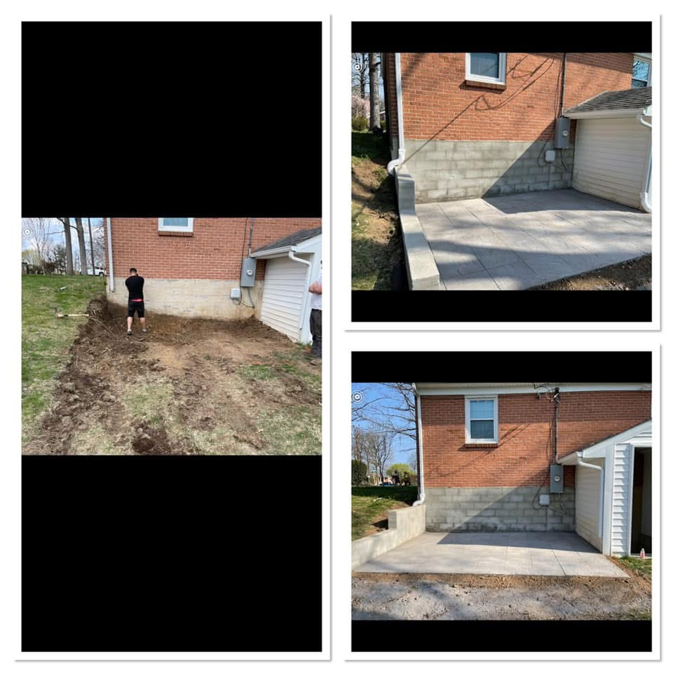

Paving in Berkeley Springs, West Virginia

Berkeley Springs is in Morgan County, and the notes already on this site single it out for hillside driveways. A+ Paving & Landscaping grades, excavates, paves, and sealcoats here. The valley towns to the east can hide a drainage mistake for a season. A Berkeley Springs lane will not. Water runs fast, finds the low edge, and takes the base with it if the stone was never compacted into a real section.
Cut the hill before you pave it
A hillside drive needs a grade the pavement can hold, not the steepest line from the road to the house. That can mean excavation, a cut into the bank, and a place for water that is not the travel lane. Clay and weathered shale on these slopes soften when they stay wet. Freeze-thaw then opens the cracks that water carved. The order is shape, stone base, then surface. Hot-mix asphalt or tar and chip both show up on rural Morgan County lanes. The choice is on the driveway paving page and in the surface comparison.
The apron at the bottom is where fast water wants to dump onto the public road. Paving that dump without a ditch or a controlled outlet creates ice at the white line. Check with Morgan County or the Town of Bath / Berkeley Springs, and with your HOA, before the apron is tied in. This is not a Berkeley County permit question, and it is not a fee we are publishing.
Sealcoating on a slope
Sealcoating still wants a dry surface and daytime air above 50°F, in the late-summer or early-fall window the winter guide already describes. On a grade, add one local caution: a heavy coat on a damp lane tracks downhill and sticks to shoes, tires, and the apron. Wait until the bank beside the drive is not weeping. Shaded hollows stay cool after the ridge is warm. Pick the day for the lane you have, not for the thermometer in the valley.
Patios on these hills, like the concrete patio work already shown for Berkeley Springs, need the same stable subgrade. See landscaping. The nearer hill-country comparison on our stated list is Gerrardstown. The flat-lot contrast is Shepherdstown. Contact us with the slope in mind. A photo from the road looking up tells us more than a close-up of the cracks.